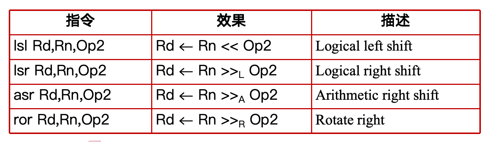
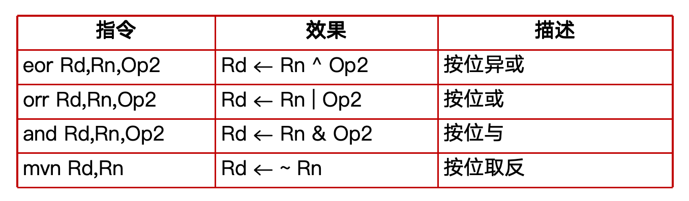
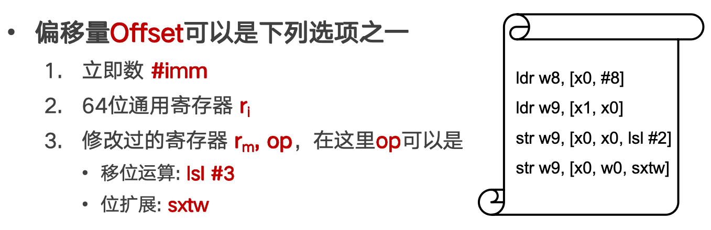
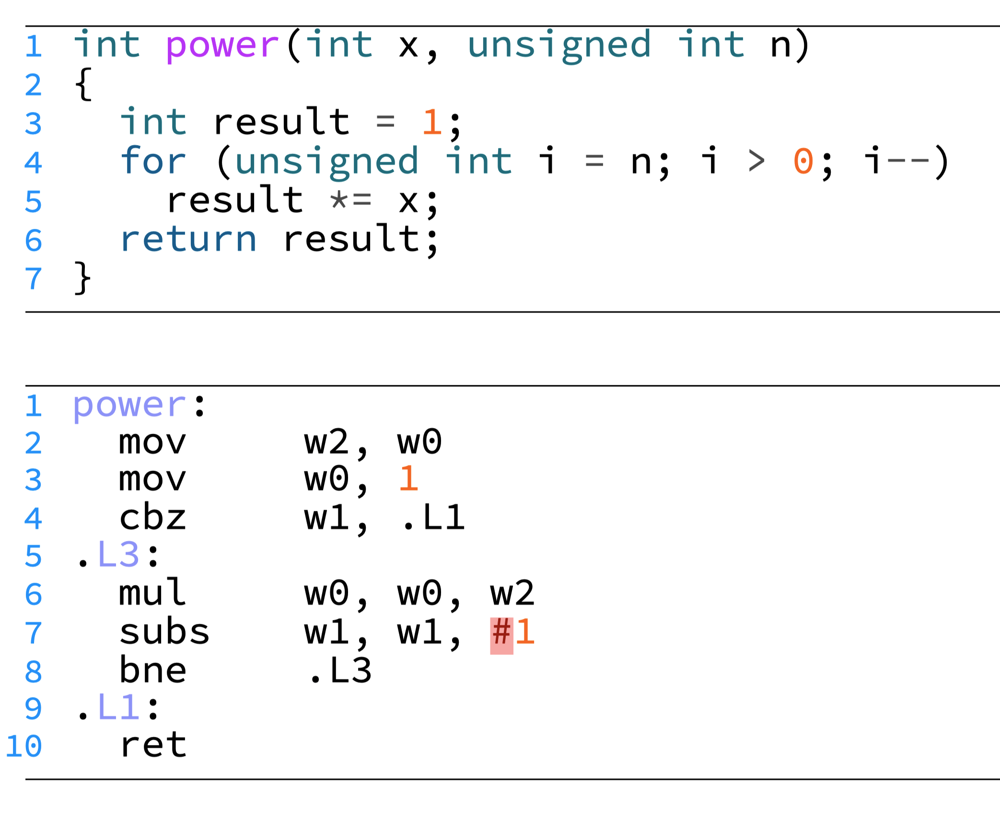
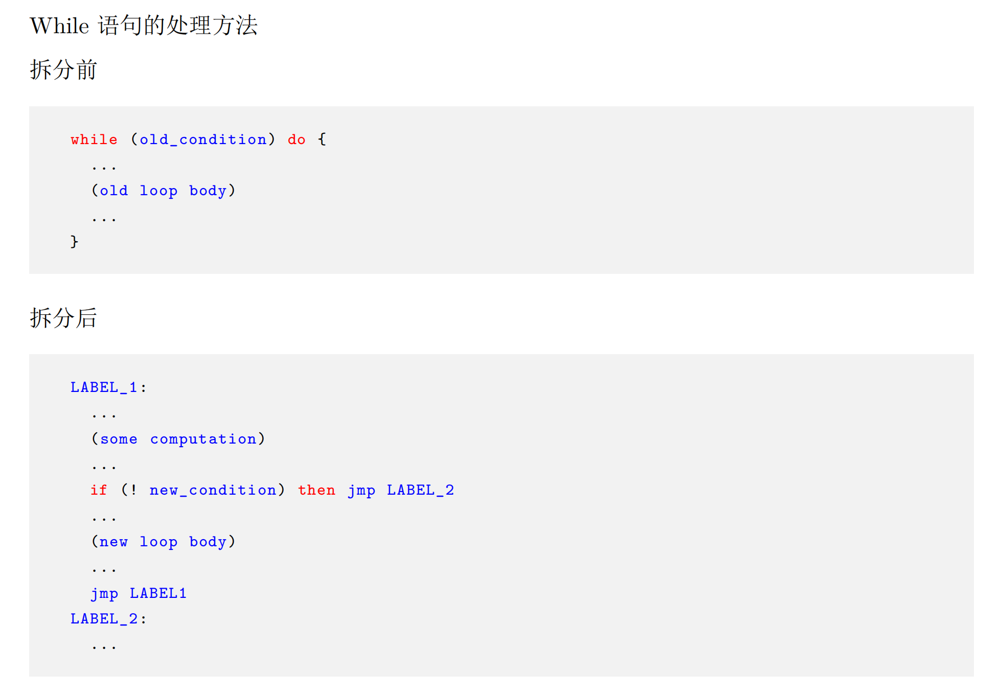

操作系统：期中复习
Last updated on November 5, 2025 pm
本文为 SJTU-CS3601 操作系统课程的期中复习，主要复习内容为操作系统概述、内存管理。
ARM 汇编
- 寄存器：
x1-x30是 31 个 64 位寄存器，w0-w30是其低位的 31 个 32 位寄存器
基础指令
- 寄存器之间的数据搬移：
mov dst, srcsrc：立即数或寄存器dst：寄存器
- 算术指令：

- 移位指令：

- 逻辑运算指令：

-
修改过的寄存器：对操作数进行移位或位扩展
- 无符号扩展：uxtb, uxth, uxtw (Zero-extend single-word / half-word / byte)
- 符号扩展：sxtb, sxth, sxtw (Sign-extend single-word / half-word / byte)
-
访存指令：


- 寻址模式：


分支指令
-
条件码：包含 N（Negative）、Z（Zero）、C（Carry）、V（Overflow）
- 设置：
- 带有 s 后缀的算术或逻辑运算指令（如
subs、adds） - 比较指令：
cmp(操作数之差)、cmn(操作数之和)、tst(操作数相与)
- 带有 s 后缀的算术或逻辑运算指令（如
- 设置：
-
跳转条件：

-
跳转指令：
- 直接分支指令：以标签对应的地址作为跳转目标
- 无条件分支指令：
b \<label> - 有条件分支指令：
bcond \<label>，如beq、bne、ble
- 无条件分支指令：
- 间接分支指令：以寄存器中的地址作为跳转目标
br reg，如br x0
- 直接分支指令：以标签对应的地址作为跳转目标
-
for 循环翻译实例：

- while 循环翻译方法及实例：



函数调用
操作系统：期中复习
https://cny123222.github.io/2025/11/05/操作系统：期中复习/